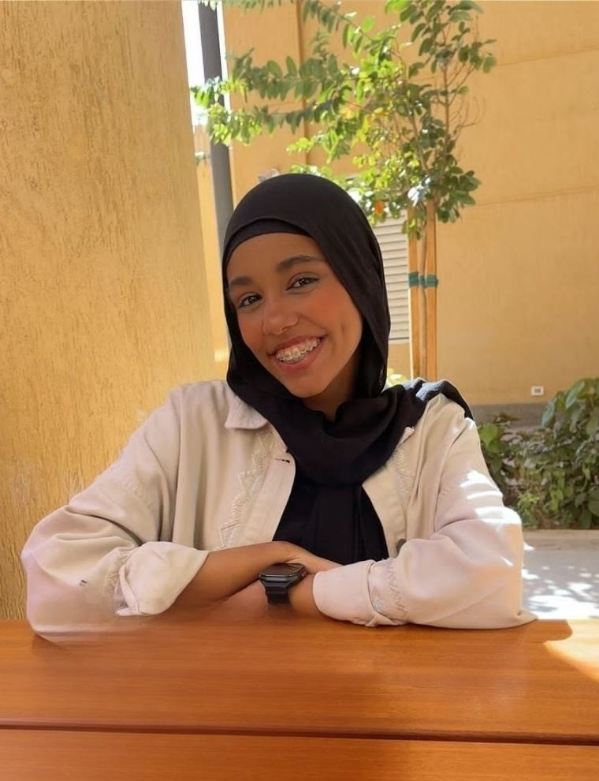

Responsive Web Development
Creating structured web pages designed to work smoothly across different screen sizes.
SOFTWARE DEVELOPMENT
Software Development Student
& React Frontend Web Developer
I’m building my skills in web development and programming through learning, practice, and hands-on projects.

01 — ABOUT
I’m Maryem Fouad, a third-year Computer Science student at Arab Open University, studying Software Development and developing my skills toward React Frontend Web Development. I enjoy programming, problem-solving, and learning how technology can turn ideas into useful digital experiences.
Through university study and DEPI training, I’m building a foundation in HTML, CSS, JavaScript, Python, Java and C++ while developing my frontend skills. I’m interested in creating clean, responsive, and user-friendly interfaces, and I enjoy learning by turning concepts into practical projects. My goal is to keep improving as a developer and build web experiences that are simple, useful, and easy to use.
02 — SERVICES
Focused services that match my current software development and frontend learning path.
Creating structured web pages designed to work smoothly across different screen sizes.
Building clean and user-friendly interfaces with a focus on clarity, layout, and usability.
Adding JavaScript interactions and dynamic behavior to make web experiences more useful.
Developing simple, responsive landing pages that present information clearly and professionally.
03 — SKILLS
Building structured web pages.
Styling and responsive layouts.
Adding interaction and dynamic behavior.
Programming fundamentals and problem solving.
Object-oriented programming fundamentals.
Programming fundamentals and logic building.
Frontend specialization through DEPI training.
DEPI TrackMY VALUE
I focus on writing clear code, solving problems step by step, and building accessible, user-friendly interfaces.
أساعد أصحاب المشاريع والأفراد على تحويل أفكارهم إلى تجارب ويب منظمة ومتجاوبة من خلال تطوير الواجهات الأمامية ومهارات حل المشكلات.
04 — PROJECTS
These are portfolio practice projects created to demonstrate my development skills.
WEB APP
A clean task-management interface for creating, organizing, editing, and completing daily tasks.
E-COMMERCE
A responsive e-commerce interface with product cards, categories, product details, and a shopping cart experience.
DASHBOARD
A responsive dashboard concept for displaying weather information for different cities in a simple visual layout.
05 — EDUCATION
CURRENT
Faculty of Computer Studies · Computer Science · 3rd Year
DEPI
React Frontend Web Developer track
06 — CONTACT
Let’s turn it into a clean, responsive web experience. Feel free to connect through email, LinkedIn, or GitHub.